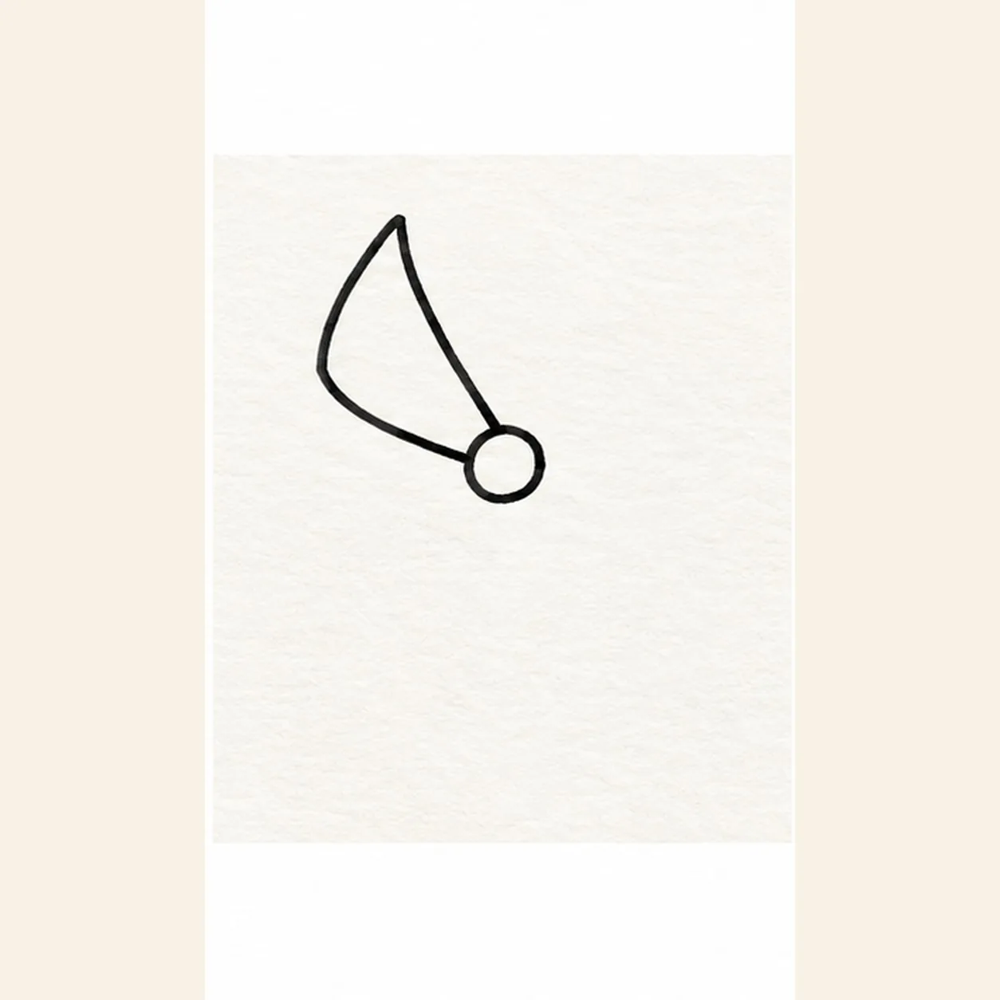
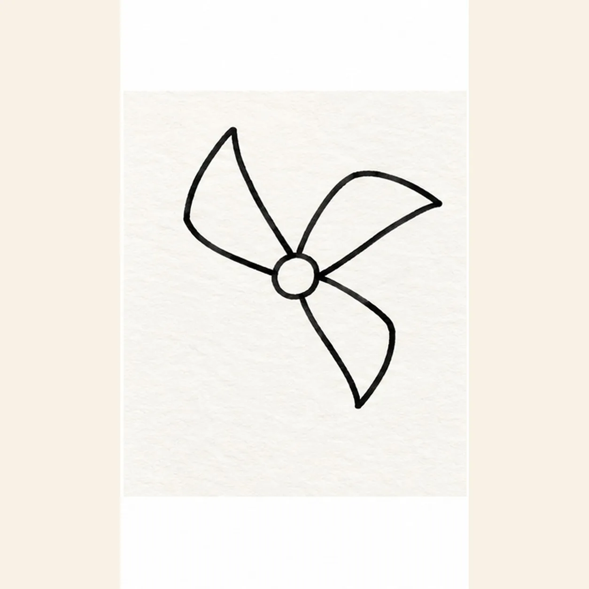
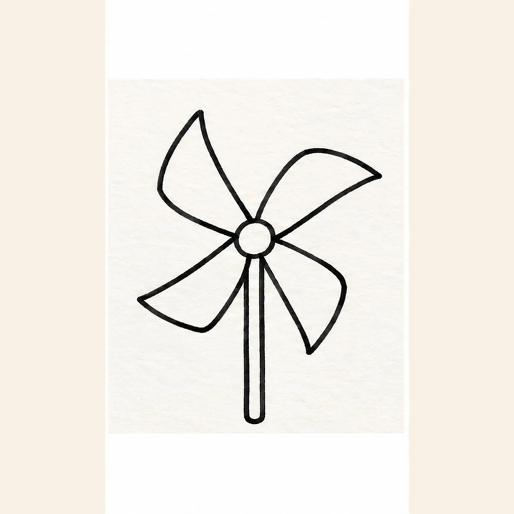
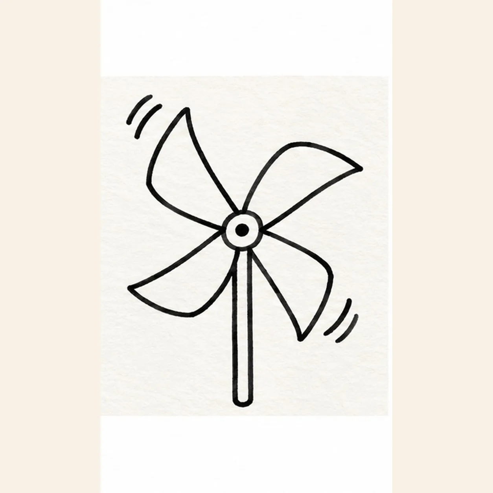

Felt-tip marker mode
Let's draw a pinwheel
Treat this as one playful practice round: sketch the idea loosely, simplify the shapes, then commit with confident marker outlines and bright fills.
-
01

Start the hub and first blade
Draw a small circle above page center. From its upper-left edge, sweep out one wide rounded triangular blade, then curve its lower edge back to the same hub.
Marker tip: Keep the circle small and the first blade broad; the other three will meet the same fixed hub.
-
02

Turn the next two blades
From the same hub, draw one curved triangular blade toward upper right and another toward lower right. Keep their outer tips separated and their inner ends tucked beneath the hub.
Marker tip: Leave a clear gap between the two new outer tips so the three blades stay countable.
-
03

Close the wheel and stick
Fill the open lower-left quadrant with the fourth curved blade. From behind the hub, draw two close vertical lines down for the stick, stopping its top where the blades cover it.
Marker tip: Count four blades before adding the stick; hide the stick top behind the hub instead of drawing through it.
-
04

Set the fastener and spin
Place one small dark fastener in the hub circle. Add two short curved ticks outside the upper-left blade and two outside the lower-right blade, keeping all four clear of the paper.
Marker tip: Keep the two pairs outside the blade edges so they suggest motion without looking like extra blades.
-
05
Color the spinning paper
Color the four outlined blades coral, yellow, teal, and violet, one color per blade. Fill the stick blue, reinforce the same black contours, and leave small paper streaks for handmade marker texture.
Marker tip: Use one color per blade and stop short of a perfectly solid fill; the paper streaks give the marker drawing its energy.